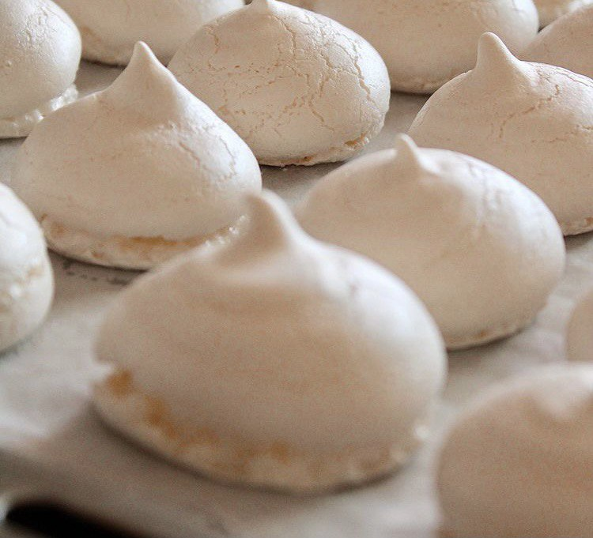
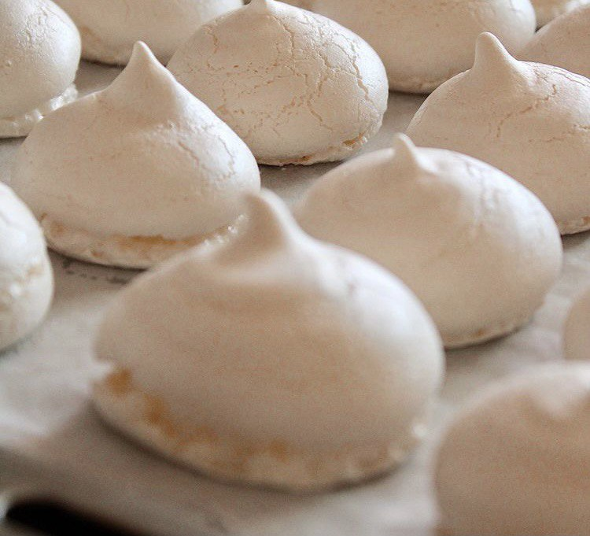

Пралине
Тирамису
Брусничный зефир
Шоколадный фондан
Классический чизкейк
Марципан
Брауни
Воздушное безе
Американский яблочный пирог
Крем-брюле
Ингредиенты к рецепту:
25 г миндаля
25 г кешью
25 г грецких орехов
200 г сахара
1 ст. л. растительного масла
Приготовление блюда по рецепту:
Шаг 1. Грецкие орехи и миндаль обжарить на сухой разогретой сковороде, постоянно помешивая, 5–6 мин. Выложить на один край полотняного полотенца, накрыть вторым концом и слегка потереть, чтобы удалить шелуху. Кешью также обжарить на сухой сковороде до золотистого цвета.
Шаг 2. Поместить все орехи между двумя слоями пищевой пленки и 2–3 раза как следует прокатать скалкой.
Шаг 3. Сотейник с толстым дном слегка смазать маслом, всыпать сахар и поставить на небольшой огонь. Готовить, постоянно помешивая, пока сахар полностью не расплавится и не приобретет светло-желтый цвет.
Шаг 4. Добавить в карамель орехи, перемешать. Через 2–3 мин. снять с огня.
Шаг 5. Накрыть рабочую поверхность листом фольги или кондитерской бумаги, смазать его маслом и вылить карамельную смесь. Смазанной маслом ложкой разровнять поверхность. Дать застыть.
Шаг 6. Отделить пралине от фольги. Крупные куски можно использовать для украшения кондитерских изделий. Для начинки пралине нужно измельчить в крошку.
Ингредиенты к рецепту:
250 г печенья савоярди
500 г маскарпоне
5 желтков крупных яиц
500 г сливок жирностью 33%
250 г сахара
1 порция двойного эспрессо
50 мл ликера «Амаретто»
какао-порошок для украшения
Приготовление блюда по рецепту:
Шаг 1. Разорите желтки с сахаром и заварите на водяной бане, постоянно помешивая, до растворения кристалликов сахара: получится однородная светлая пушистая масса. В процессе масса должна увеличиться в объеме. Остудите.
Шаг 2. Очень холодные сливки взбейте в пышную пену. Желтковую смесь с сахаром перемешайте силиконовой лопаткой с маскарпоне до однородности. Затем в три приема добавьте взбитые сливки, перемешивая лопаткой снизу вверх. По возможности, переложите крем в кондитерский мешок.
Шаг 3. Эспрессо остудите до комнатной температуры. Добавьте «Амаретто». Разрежьте каждое печенье савоярди на 4 части и начните собирать десерт: на дно 10 небольших банок отсадите крем из кондитерского мешка (или выкладывайте ложкой).
По 2 кусочка савоярди быстро (чтобы не размокли) обмакните в кофе с ликером, выложите на крем.
Шаг 4. Залейте печенье кремом, закройте банки, поставьте в холодильник, чтобы десерт застыл, на 2–4 ч. Затем откройте, посыпьте какао-порошком.
Ингредиенты к рецепту:
яйцо - 1 шт.
яблоки - 3-4 шт. (кислые, антоновка или гренни смит)
брусника - 150 г
сахар - 500 г
агар-агар - 8 г (4 ч. л. без горки)
вода - 160 мл
сахарная пудра (для обсыпки готового зефира)
Приготовление блюда по рецепту:
Шаг 1. Агар-агар замачиваем в воде. Яблоки разрезаем на 4 части (косточки удаляем) и запекаем в духовке до мягкости. При температуре 180-200 градусов минут 10-15. Пробиваем яблоки блендером и перетираем через сито.
Шаг 2. Бруснику размораживаем, перебиваем блендером в пюре. Перетираем через сито.
Шаг 3. Яблочное пюре (необходимо 250 грамм) смешиваем с брусничным и увариваем на небольшом огне. Постоянно помешиваем. Масса должна увариться в два раза, до 200 грамм. Пюре должно быть достаточно густым, всю лишнюю влагу необходимо выпарить.
Шаг 4. Пюре перекладываем в миску и даем ему остыть.
Шаг 5. Берем яйцо, отделяем белок от желтка. Желток не понадобиться.
Шаг 6. Пюре немного взбиваем (взбивать лучше кухонной машиной, если взбиваете миксером, рекомендую делать половину порции), добавляем половину белка, взбиваем. Затем добавляем вторую половину белка. Взбиваем массу до побеления постепенно добавляя 100 грамм сахара (по чуть-чуть). Массу необходимо взбить до устойчивых пиков (она должна держать форму и не растекаться).
Шаг 7. Добавить оставшийся сахар (400 гр.) к агар-агару (воду тоже оставляем). Тщательно перемешиваем и ставим сироп на средний огонь. После закипания варим минут 5 (температура сиропа должна быть 107-110 градусов). Даем сиропу немного остыть (минуты 2).
Шаг 8. Не прекращая взбивать белковую массу тоненькой струйкой вливаем горячий сироп (по стенке чаши, старайтесь, чтобы сироп не попадал на венчики). Взбиваем зефирную массу до твердых пиков (масса должна держать форму).
Шаг 9. Отсаживаем зефирки на пергаментную бумагу. Оставляем на 24 часа. Затем обсыпаем сахарной пудрой и соединяем попарно.
Ингредиенты к рецепту:
180 г - шоколад черный (2 шоколадки)
180 г - сливочное масло (+20 грамм для смазывания форм)
150 г - сахар
5 шт. - яйца
100 г - мука (просеянная)
25 г - темный какао-порошок (для посыпания форм)
1 щепотка - соль
Приготовление блюда по рецепту:
Шаг 1. Шоколад (180 г) поломайте на мелкие кусочки и соедините со сливочным маслом (180 г), нарезанным на кусочки. Отправьте смесь в огнеупорной мисочке на паровую баню и растопите до однородного гладкого состояния. Постоянно помешивайте силиконовой лопаткой, чтобы шоколад не перегрелся и не свернулся.
Шаг 2. Яйца (5 шт.) взбейте венчиком с сахаром (150 г) до белого цвета яиц и растворения сахара.
Шаг 3. Слегка остывшую шоколадную массу введите к взбитым яйцам и аккуратно перемешайте.
Шаг 4. Добавьте просеянную муку (100 г) со щепоткой соли и снова перемешайте до однородности очень аккуратными движениями. Накройте массу пищевой пленкой и уберите в холодильник минимум на 2 часа, а лучше на ночь.
Шаг 5. Формы для выпекания (порционные) смажьте сливочным маслом (20 г) и посыпьте какао-порошком (25 г).
Шаг 6. Наполните формы тестом на 2/3 объема и отправьте их в разогретую до 180 градусов духовку на 7-8 минут. Время может зависеть от размера форм и свойств духовки, при необходимости можете увеличить его на 1-2 минуты.
Шаг 7. Готовый фондан должен остаться в центре немного непропеченный. Достаньте формы из духовки и дайте им остыть буквально 1 минуту. Если вы оставите фондан в формах на более длительное время, он пропечется внутри и не потечет. Аккуратно переверните фондан на тарелку для подачи. После того, как достанете фондан из формы, немного присолите его. Подавайте с мороженым.
Ингредиенты к рецепту:
масло сливочное (растопленное) - 5 ст. л.
крекеры - 200 г
сахар - 1/4 стакана
соль - 1/4 ч. л.
Для начинки:
сливочный сыр (комнатной температуры) - 1 кг
лимонная цедра - 1 ч. л.
лимонный сок - 1 ст. л.
соль - 1/2 ч. л.
яйца крупные - 4 шт.
сметана - 1 стакан
сахар - 1 стакан или по вкусу
Приготовление блюда по рецепту:
Шаг 1. Предварительно разогреть духовку до 180 градусов. Смазать маслом разъемную форму для торта.
Шаг 2. Блендером хорошо измельчить печенье. Добавить растаявшее масло, сахар и соль, перемешать.
Шаг 3. Выложить полученную массу в форму, придавливая пальцами, равномерно распределить по дну и краям. Выпекать 12-15 минут. Охладить на решетке. Огонь снизить до 150 градусов.
Шаг 4. В чайнике вскипятить воду. Подготовить начинку. Миксером на средней скорости взбить сливочный сыр. Постепенно добавить сахар, лимонную цедру и сок, соль. Затем вбить по одному яйца и добавить сметану.
Шаг 5. Форму с коржом завернуть в фольгу. Вылить начинку. Поставить в противень с высокими бортиками, налить в противень кипяток таким образом, чтобы вода доходила до 1/2 высоты наполненной формы.
Выпекать около 1 часа 45 минут до готовности.
Шаг 6. Вынуть форму из воды, охладить при комнатной температуре 20 минут. Острием ножа провести по стенкам, аккуратно отсоединить бортики формы.
Шаг 7. Оставить при комнатной температуре до полного охлаждения. Оставить в холодильнике на ночь.
Ингредиенты к рецепту:
миндаль — 100 г
сахар — 150 г
вода — 40 мл
Приготовление блюда по рецепту:
Шаг 1. Миндаль залейте крутым кипятком и оставьте на 8-10 минут. Можно опустить орехи в кипящую воду и прокипятить 2 минуты. Откиньте миндаль на сито и дайте немного остыть.
Шаг 2. Остывший миндаль очистите от кожицы. Это сделать очень легко.
Шаг 3. Разогрейте сковороду. Сделайте самый маленький огонь. Пересыпьте очищенный миндаль в сковороду. Подсушите 3 минуты на маленьком огне. Миндаль должен остаться светлым, по этой причине подсушивать нужно на самом минимальном огне. Нужно просто убрать влагу. Остудите миндаль.
Шаг 4. Миндаль измельчите в блендере до самой мелкой крошки. Можно использовать кофемолку и измельчать небольшими порциями. В этом случае получится очень мелкий помол, что даже лучше.
Шаг 5. Теперь займитесь приготовлением сиропа. В толстостенный сотейник всыпьте сахар и влейте воду. Установите сотейник на умеренный огонь и вскипятите воду с сахаром. Смесь в процессе закипания я не мешаю. Возьмите сотейник побольше, так как сироп будет бурно кипеть и пениться.
Шаг 6. Варите сироп до температуры 120 градусов. Очень хорошо, если на вашей кухне есть кулинарный термометр. Воспользуйтесь им. Если его нет, можно воспользоваться другим способом. Рядом поставьте глубокую тарелочку с холодной водой. Периодически нужно делать пробу на "мягкий шарик". Для этого взять немного сиропа и капнуть в холодную воду. Если из этой капли удаётся сформировать мягкий шарик, тогда сироп доведен до нужной температуры. Если каплю не удается скатать в шарик, тогда сироп нужно ещё варить. С момента закипания до нужной температуры понадобится греть примерно около 9 минут на маленьком огне.
Шаг 7. Когда сироп дошел до нужной температуры, всыпьте миндальную крошку. Хорошо перемешайте.
Шаг 8. Смесь у меня получилась вот такая суховатая. Её нужно остудить. Чтобы придать гладкую структуру, измельчите ещё раз в блендере. Если масса пересушена, добавьте сначала 1/2 ст. ложки кипяченой воды комнатной температуры и ещё раз измельчите всё в блендере. Воду добавляйте с осторожностью, чтобы масса не стала жидкой.
Если наоборот, масса жидкая, добавьте немного сахарной пудры.
Шаг 9. Остывшую массу соберите в комок и сформируйте колбаску.
Шаг 10. Заверните колбаску в пищевую плёнку и отправьте в холодильник на 3-4 часа.
Шаг 11. Марципан готов. Получилось примерно 250 г марципана.
Его можно просто подать к сладкому столу вместо конфет, а можно лепить марципановые фигурки или использовать для начинки кондитерских изделий и украшения тортов. Тогда за пару часов до начала работы марципан нужно достать из холодильника, чтобы он стал мягким, как пластилин.
Ингредиенты к рецепту:
темный шоколад 100 г
сливочное масло 180 г
коричневый сахар 200 г
куриное яйцо 4 штуки
пшеничная мука 100 г
грецкие орехи 100 г
Приготовление блюда по рецепту:
Шаг 1. Шоколад разломать на кусочки и вместе со сливочным маслом растопить на водяной бане, не переставая все время помешивать лопаткой или деревянной ложкой. Получившийся густой шоколадный соус снять с водяной бани и оставить остывать.
Шаг 2. Тем временем смешать яйца со ста граммами коричневого сахара: яйца разбить в отдельную миску и взбить, постепенно добавляя сахар. Взбивать можно при помощи миксера или вручную — как больше нравится, — но не меньше двух с половиной-трех минут.
Шаг 3. Острым ножом на разделочной доске порубить грецкие орехи. Предварительно их можно поджарить на сухой сковороде до появления аромата, но это необязательная опция.
Шаг 4. В остывший растопленный со сливочным маслом шоколад аккуратно добавить оставшийся сахар, затем муку и измельченные орехи и все хорошо перемешать венчиком.
Шаг 5. Затем влить сахарно-яичную смесь и тщательно смешать с шоколадной массой. Цвет у теста должен получиться равномерным, без разводов.
Шаг 6. Разогреть духовку до 200 градусов. Дно небольшой глубокой огнеупорной формы выстелить листом бумаги для выпечки или калькой. Перелить тесто в форму. Поставить в духовку и выпекать двадцать пять — тридцать минут до появления сахарной корочки.
Шаг 7. Готовый пирог вытащить из духовки, дать остыть и нарезать на квадратики острым ножом или ножом для пиццы — так кусочки получатся особенно ровными.
Ингредиенты к рецепту:
сахар 150 г
яичный белок 3 штуки
ванильный сахар 2 чайные ложки
Приготовление блюда по рецепту:
Шаг 1. Смешиваем 150 г сахара и 2 чайные ложки (но можно и побольше, так запах будет на весь дом) ванильного сахара.
Шаг 2. Главное — тщательно отделить белки от желтков, иначе белки будут плохо взбиваться и ничего не выйдет. Возьмите две чашечки, в одну аккуратно вылейте белки, в другой - желтки (их можно прикрыть фольгой, убрать в холодильник и потом что-нибудь тоже из них сделать). Берем какую-нибудь миску, в которой будем взбивать белки, миксер, и вперед! Важно, конечно, чтобы миксер был мощный. Если все в порядке, то 3–5 минут должно вполне хватить, чтобы получилась крепкая пена, которая не вывалится, даже если вы опрокинете миску вверх дном.
Шаг 3. Высыпаем сахар из стакана, взбиваем еще минут 5. Пока сахар более менее не станет с пеной одним целым. Дело сделано! Чтобы проверить, насколько все идеально, можно провести венчиками миксера по поверхности пены, и если останутся неподвижные следы, то все ок!
Шаг 4. На противень кладем лист бумаги для выпекания, чтобы подходил по размеру. Ну и накладываем на него будущие безе в любой форме! Можно сделать маленькие безе или большие. Маленькие, кстати, быстрее выпекаются. Ставим в духовку при 120 градусах, на 50–60–80 минут.
Ингредиенты к рецепту:
яблоко 1 кг
коричневый сахар 190 г
корица 5 г
пшеничная мука 400 г
сливочное масло 225 г
куриные яйца - 2 штуки
Приготовление блюда по рецепту:
Шаг 1. Для теста, взбить масло и 50 г сахара в большой миске до однородности. Добавить одно яйцо и желток (второй белок пригодится позже). Взбить вместе чуть меньше 1 мин — это будет выглядеть немного как яичница.
Шаг 2. Затем добавить 350 г муки и начать перемешивать деревянной ложкой, когда тесто соберется, продолжить вымешивать руками. Аккуратно скатать тесто в шар, завернуть в пленку и охладить в течение 45 минут.
Шаг 3. Выложить слой бумажных полотенец на на противень. Очистить яблоки от кожи, избавить от сердцевины и нарезать ломтиками около 5 мм толщиной. Выложить яблоки на полотенца ровным слоем, накрыть бумажными полотенцами и выложить сверху еще слой яблок, который тоже накрыть. Оставить так яблоки на время приготовления теста.
Шаг 4. Теперь смешать 140г сахара, корицу и 50 г муки миске, достаточно большой, чтобы положить туда яблоки.
Шаг 5. Разогреть духовку до 170 градусов в режиме с конвекцией. Слегка взбить яичный белок вилкой. Отрезать треть теста и оставить его завернутым в пленку, остальное раскатать и выложить в форму.
Шаг 6. Обсушить еще раз яблоки с помощью бумажного полотенца, всыпать их в миску, быстро перемешать руками и выложить на тесто.
Шаг 7. Край теста смочить водой, выложить оставшееся раскатанное тесто наверх и слепить края. Отрезать лишнее. Сделать в пироге 5 надрезов для выхода пара. Смазать пирог белком, посыпать сахарной пудрой и запечь в духовке 40-45 минут. Затем вынуть и оставить на 10 минут.
Ингредиенты к рецепту:
куриные яйца - 9 штук
сливки 33%-ные 700 мл
ваниль - 1 штука
соль 1.5 г
сахар 180 г
Приготовление блюда по рецепту:
Шаг 1. К девяти яичным желткам (белки не понадобятся) добавить 180 грамм сахара и взбить венчиком. Смесь поменяет цвет с ярко-желтого на песочно-белый. Взбивая, обязательно захватывать края массы — под воздействием сахара желтки начина- ют медленно «поджариваться», если их не снимать, вкус крем-брюле будет неправильный.
Шаг 2. Стручок ванили надрезать вдоль. Ножом соскрести с его половины темную мякоть и тщательно перемешать со взбитыми желтками. Соединить смесь с холодными сливками и посолить. Процедить через мелкое сито — это надо сделать, чтобы в крем-брюле не попали кусочки желтка, затвердевшего под воздействием сахара.
Шаг 3. Расставить формы для крем-брюле в глубоком жаропрочном поддоне и налить воды — так, чтобы порционные чашки утонули в ней на две трети своей высоты. Затем разлить по формам яично-сливочную смесь, заполнив их до самых краев. Поставить поддон в духовку, разогретую до 100 градусов, на сорок минут.
Шаг 4. Сверху готовое крем-брюле должно быть упругим, а внутри масса останется жидковатой. Поставить плошки в холодильник на пару часов — там крем должен загустеть. Для получения карамельной корочки посыпать формы ровным слоем сахара и, растапливая его с помощью горелки, превратить поверхность крема в темно-коричневую карамельную крышку.
Шаг 5. Оставить крем-брюле в покое, ненадолго, уже через минуту-другую карамель застынет — и десерт будет готов.
Yummy day
рецепты для всей семьи
Пралине
Тирамису
Брусничный зефир
Шоколадный фондан
Классический чизкейк
Марципан
Брауни
Воздушное безе
Американский яблочный пирог
Крем-брюле
P.S. With love to you